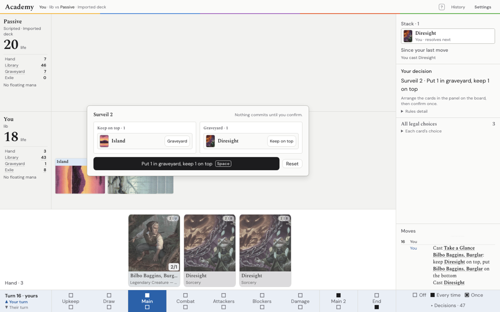
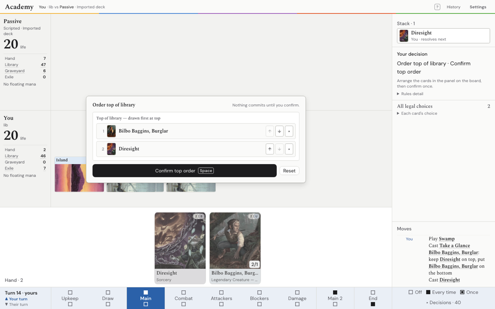
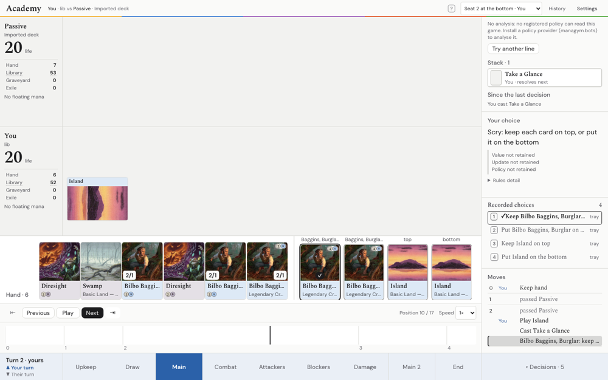

Rebuilt native extension (release, from this branch's Rust) and static SPA; launched managym academy play with imported decks against Passive, driven by Playwright with every outgoing WebSocket frame logged. Recordings read from play.sqlite.
Deck 7 Mountain / 7 Island / 7 Swamp / 16 Raging Goblin / 12 Bilbo / 11 Diresight vs 60 Plains. Seven attacks of 1–4 goblins, each drafted by clicking creatures then the primary. Each Confirm sent exactly one group_command (e.g. four attackers) and nothing else; damage landed (Passive 20 → −1).

Seen: with a goblin cast this turn, the counter reads "3 of 3 Raging Goblin" beside "Attack with 4" because the new goblin is its own pile. The pile logic is the same on main, so this change did not cause it.
Panel opens with both cards unplaced and Confirm disabled ("Place 2 more cards"); still disabled after one card is placed; enabled as "Confirm (1 top, 1 bottom)". One group_command per Confirm. The next Surveil revealed exactly the card the previous Scry had put on top (entity 86).
Fixed: a placed row with a long name ("Bilbo Baggins, Burglar") overflowed its bucket. The Bottom button was clipped to "Bo" and × was hidden. The cause was flex/grid items keeping min-width:auto, so the ellipsis never engaged. Fix: min-width:0 on .card-row and .card-name in ArrangePanel.svelte. Measured after the fix: every row button sits inside its bucket at 1440 and 1024 px.
Before / after:


Diresight: Surveil starts as "Keep all 2 on top" (enabled). Confirm sent one surveil plan with an empty graveyard. The OrderLibrary panel followed as its own group ("Order 2 more cards", disabled until both were ordered, then "Confirm top order"), and its Confirm sent one order_library. A second Surveil with one card moved to the graveyard read "Put 1 in graveyard, keep 1 on top".


canonical_replay.decisions holds one row per native step: authority.group.<id>.0 "Keep Bilbo on top", .1 "Put Island on the bottom". In Replay these are two SCRY decisions showing raw offers with the chosen one checked; Replay has no arrange panel and no disclosure.

academy.table.group-draft).command. With one card left (below the 2-card threshold) the panel gave way to the raw offers, and the game finished normally.group_command went out, then a resume. After the reload the game was past the Scry, no submission was pending, and the recording holds the group's two steps exactly once.Works: attack drafts, Scry, Surveil and OrderLibrary each confirm as one message. Recording, Replay, reload and the raw-offer path all behave as planned.
Not reached: blocker groups (Passive never attacks; the e2e fixture covers them), watcher/TransferPilot delivery and refused plans in a live game (covered by tests/academy/test_group_command.py), and Bottom-end OrderLibrary (no card in these decks).
Still wrong, worst first: none introduced by this change. Two existing, cosmetic issues: the pile counter next to a fresh creature, and the panel shifting up as it shrinks while cards are placed (it is vertically centred).